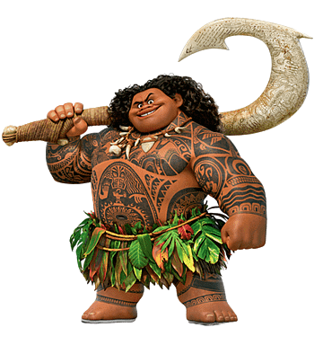
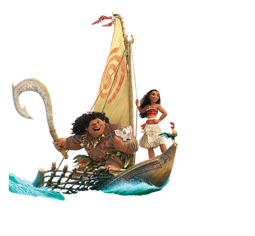

a living island who brought life to the ocean long ago using a pounamu stone as her heart and the source of her power).
Maui, the trickster, shape-shifting demigod of the wind and sea and master of wayfinding, stole the heart to give humanity the power of creation.
This caused Te Fiti to disintegrate, and Maui was attacked by Te Kā, a volcanic demon.
 He lost both the heart and his magic fish hook to the depths of the sea.
He lost both the heart and his magic fish hook to the depths of the sea.A thousand years later, the ocean chooses Moana, daughter of Motunui's chief Tui, to return the heart to Te Fiti.
Tui and Sina, Moana's father and mother, try to keep her away from the ocean to prepare her to become the island's chief.
Sixteen years later, blight strikes the island, killing vegetation and shrinking the fish catch.
Moana suggests going beyond the island's reef with her pet pig Pua to find more fish and find out what is happening, but Tui forbids it.
Moana tries conquering the reef but is overpowered by the tides and shipwrecked.
 That afternoon, Moana's grandmother Tala shows her a secret cavern of ships, revealing that their people were voyagers until Maui stole Te Fiti's heart; the ocean was no longer safe without it.
That afternoon, Moana's grandmother Tala shows her a secret cavern of ships, revealing that their people were voyagers until Maui stole Te Fiti's heart; the ocean was no longer safe without it.Tala explains that Te Kā's darkness is poisoning the island, but can be cured if Moana finds Maui and has him restore the heart of Te Fiti.
Having been given the heart by the ocean, Tala gives it to Moana.
Tala later falls ill and, on her deathbed, tells Moana that she must depart to find Maui.
. Moana sets sail on a camakau from the cavern along with her dimwitted pet rooster, Heihei, who has stowed away on it.
They are caught in a typhoon and shipwrecked on an island where she finds Maui, who boasts about his achievements.
She demands that Maui return the heart, but he refuses and traps her in a cave before leaving on her boat.
She escapes and confronts Maui, who reluctantly lets her on the camakau.
They are attacked by Kakamora, coconut pirates who seek the heart, but Moana and Maui outwit them.
Moana realizes Maui is no longer a hero since he stole the heart and cursed the world, and convinces him to redeem himself by returning the heart.
 Maui first needs to retrieve his magical fishhook in Lalotai, the Realm of Monsters, from Tamatoa, a giant coconut crab.
While Moana distracts Tamatoa, Maui retrieves his hook, only to find himself unable to control his shape-shifting.
He is overpowered by Tamatoa, but Moana's quick thinking allows them to escape with the hook.
Maui reveals that his first tattoo was earned when his mortal parents abandoned him as an infant, and the gods, taking pity on him, granted him his powers.
After reassurance from Moana, Maui teaches her the art of way-finding, regaining control of his powers, and the two grow closer.
They arrive at Te Fiti's island, only to be attacked by Te Kā.
Moana refuses to turn back, resulting in Maui's hook being badly damaged.
The ocean obliges and takes the heart, but Tala's spirit appears, inspiring Moana to find her true calling.
She retrieves the heart and sails back to confront Te Kā.
Maui returns, having had a change of heart, and buys Moana time to reach Te Fiti by fighting Te Kā, destroying his hook in the process.
Moana realizes Te Kā is Te Fiti, corrupted without her heart.
The ocean clears a path for Moana, allowing her to return the heart to Te Fiti,
who heals the ocean and islands of blight.
Maui apologizes to Te Fiti, who fixes his hook before falling into a deep sleep and becoming an island.
Moana bids farewell to Maui and Te Fiti, returning home and reuniting with her parents.
She takes up her role as chief and wayfinder, leading her people as they resume voyaging, accompanied by Maui.